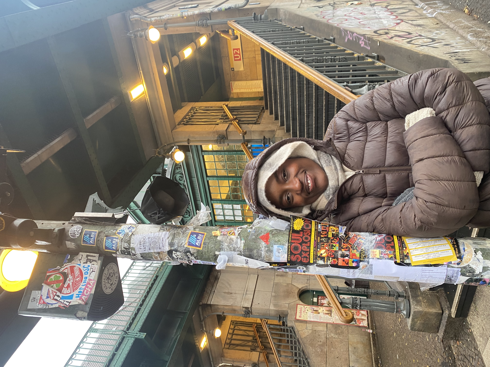
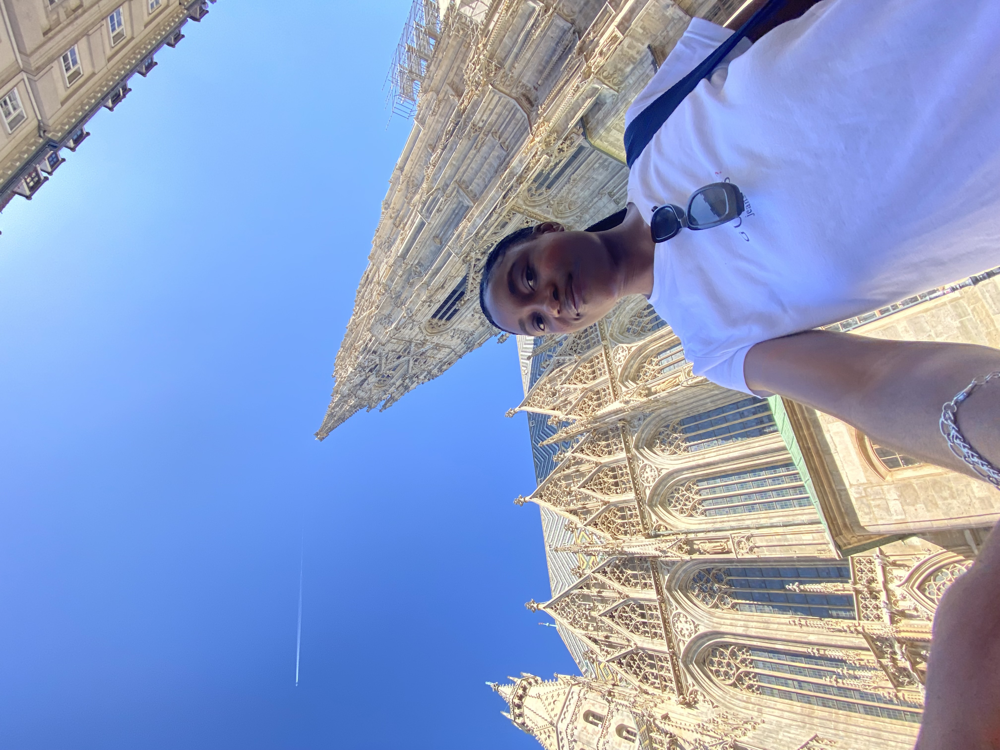
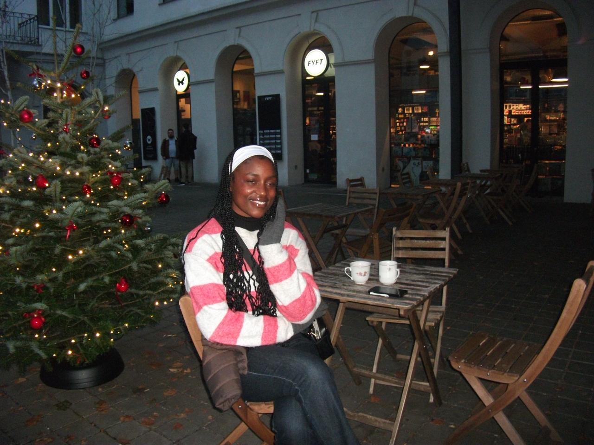
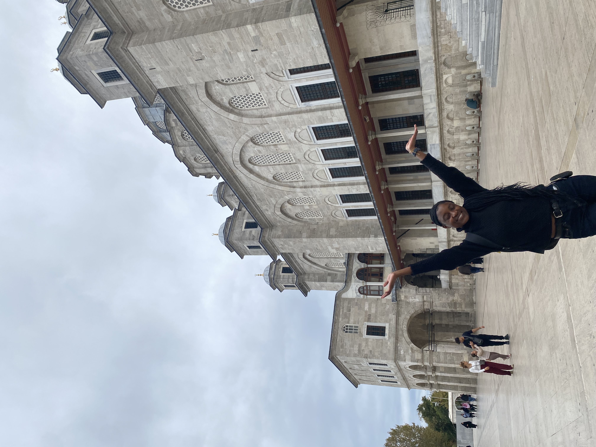

Exploration Log
Brief observations from the places that stuck with me.
Cape Town
South Africa · Southern Africa
Home. Table Mountain sits in the background of everything — a fixed point the city organises itself around. You never fully stop noticing it.
33.9249° S, 18.4241° E
Dresden
Germany · Central Europe
A city that rebuilt itself from photographs. Standing in the Altmarkt, the Kreuzkirche and the Frauenkirche visible from the same square — history here feels present and deliberate, not finished.
51.0504° N, 13.7373° E

Altmarkt · Kreuzkirche in background
Berlin
Germany · Northern Europe
There's an unofficial archive at every U-Bahn entrance — years of stickers and flyers layered on every post. Berlin keeps a record of itself even when nobody planned it that way.
52.5200° N, 13.4050° E

U-Bahn · Warschauer Strasse area
Prague
Czech Republic · Central Europe
The spires of St. Vitus push straight up into a blue sky and make everything at ground level feel provisional. Prague has the specific quality of a city that has outlasted most attempts to change it.
50.0755° N, 14.4378° E

St. Vitus Cathedral · Prague Castle

Christmas market · Old Town
Istanbul
Turkey · Eurasia
The courtyard of the Blue Mosque adjusts your sense of scale. Istanbul is the only city I've been in where you can stand on a bridge in the middle of things and be, technically, between two continents.
41.0082° N, 28.9784° E

Blue Mosque (Sultan Ahmed Mosque) · Sultanahmet
// 5 LOCATIONS LOGGED // MORE ENTRIES PENDING